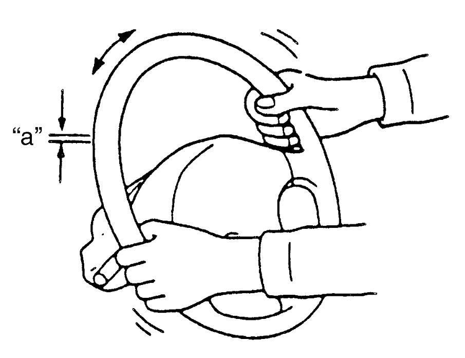
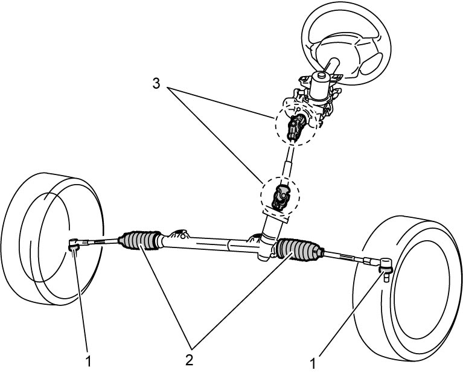

0B
| Steering System Inspection |
1)Check steering wheel for play and abnormal noise, holding vehicle straight on ground.

Steering wheel play
“a”: 0 – 30 mm (0 – 1.2 in.)

 "Expand image")
2)Check bolts and nuts for tightness and retighten them if necessary. Repair or replace defective parts.
3)Check steering linkage for looseness and damage. Repair or replace defective parts.
4)Check boots (1) and (2) of steering linkage and steering gear case for damage (leakage, detachment, tear, etc.). Replace defective steering rack boot(s) or tie-rod end(s) with new one(s).
If any dent is found on steering gear case boots, correct it to original shape by turning steering wheel to the right or left as far as it stops and holding it for a few seconds.
If any dent is found on steering gear case boots, correct it to original shape by turning steering wheel to the right or left as far as it stops and holding it for a few seconds.
5)Check universal joints (3) of steering shaft for abnormal noise and damage. If abnormal noise or damage is detected, replace defective part with new one.

 "Expand image")
6)Check that steering wheel can be turned fully to the right and left. Repair or replace defective parts, if any.
7)Check that steering wheel can be turned fully to the right and left with smaller force when engine is running at idle speed than when it is stopped. Repair power steering system if it provides no assistance.
8)Check wheel alignment referring to Front Wheel Alignment Inspection and Adjustment.